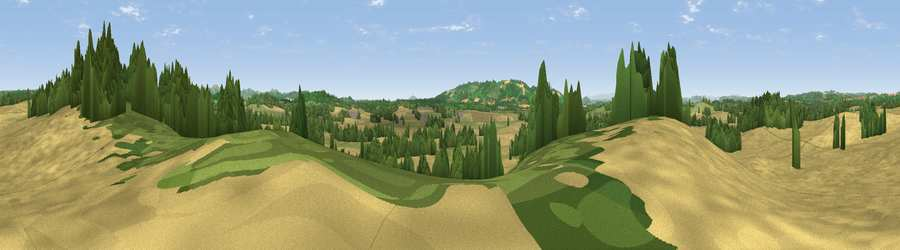

Viewpoint near Ashperton
#24117 in England · top 64% of its area beats it · near AshpertonThe view, rendered

A 360° render of this exact spot computed from the terrain model, tree cover and land cover — summer colours, afternoon light, calibrated against photographs of famous viewpoints. Real trees, hedges and buildings will differ in detail.
The panorama
Grey silhouette: terrain skyline in each direction (720 bearings, Earth curvature and refraction included). Dashed green: skyline with trees (+15 m) and buildings (+8 m) as obstacles. Blue strip: how far the ground is visible on each bearing.
Where the view opens
Wedge length = distance to the farthest visible ground on that bearing (vegetation-aware). Rings at 10, 25 and 50 km.
What fills the view
53% cropland · 24% grassland · 22% woodland
Angular shares of the visible panorama (visual magnitude), not map area. Landscape diversity 0.45 (0–1 Shannon).
Key numbers
More beautiful places nearby
The staircase of upgrades: each row has a higher view potential than everything closer. Driving times are estimates from straight-line distance, calibrated against real road routing — check an actual route before setting out.
| Place | Direction | Drive | Score |
|---|---|---|---|
| Egleton Hill | NNE · 1 km | ~3 min | 60.0 |
| Viewpoint near Fromes Hill | E · 3 km | ~8 min | 60.8 |
| Viewpoint near Bosbury | E · 4 km | ~9 min | 62.7 |
| Viewpoint near Fromes Hill | ENE · 4 km | ~9 min | 67.3 |
| Viewpoint near Yarkhill | WSW · 5 km | ~10 min | 71.4 |
| Seagar Hill | SSW · 6 km | ~12 min | 82.1 |
| Herefordshire Beacon | ESE · 13 km | ~24 min | 85.8 |
| Millennium Hill | ESE · 13 km | ~24 min | 86.9 |
52.09605, -2.53458 · source: screening · position refined by local search. Computed location — check access rights before visiting.